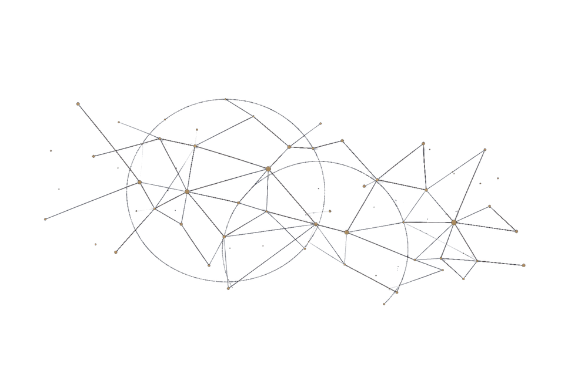

WHAT’S NEXT
Six lines of work, run in parallel.
EqualFaith Europe deliberately runs several lines of work at once, rather than staking everything on a single case. If one filing stalls in review, the rest keep moving. This is the current agenda, in brief.
Data access under Article 40(12) DSA
Escalating the vetted-researcher data-access request through the European Commission and, if needed, the courts — the foundation for evidence-based discrimination research on major platforms.
Anti-Muslim discrimination on digital platforms
Continuing DSA enforcement work against platforms that fail to assess and mitigate foreseeable discrimination risk, building on the existing complaint against X Corp.
AI recruitment systems and the Article 27 FRIA gap
Pressing the European AI Office and AI Board to close the gap that currently leaves private-sector recruitment AI outside mandatory fundamental rights assessment.
Face-covering ban litigation
Extending the published comparative research (France, Belgium, Latvia, Austria, Spain, Portugal) into support for individuals already affected, and coordinated cases before national courts and the ECtHR.
Trusted flagger independence under Article 22 DSA
Pressing DG CONNECT and national regulators to require funding and affiliation disclosure for designated trusted flaggers — closing a gap that currently leaves Muslim civil society without a dedicated fast-lane flagger of its own.
Public reporting infrastructure and pro bono network
Building a discrimination-reporting tool for individuals to document incidents directly, and a pro bono network of EU-qualified lawyers to take documented cases into national courts in parallel.